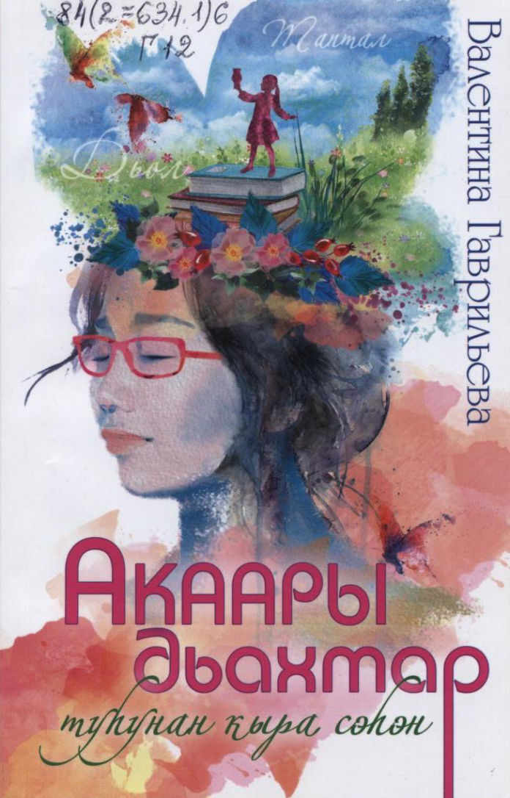
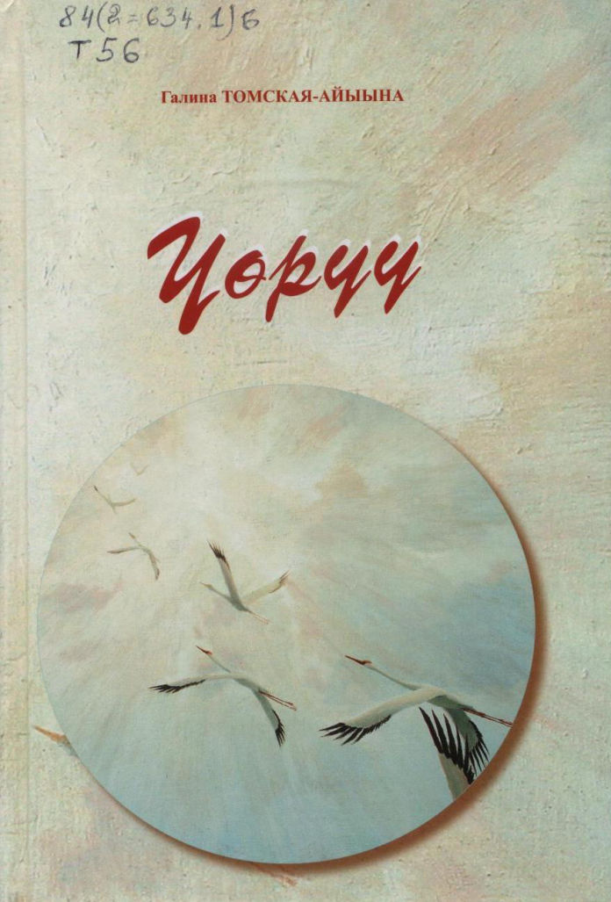

Гаврильева В. Н.
Акаары дьахтар туһунан кыра сэһэн / Валентина Гаврильева. - Дьокуускай : Бичик, 2019. - 128 с.

Кондратьев П. П.-Сатабыл.
Ааппытын ааттаарыҥ / Петр Кондратьев-Сатабыл. - Дьокуускай : Бичик, 2019. - 112 с.

Томская Г. Е.-Айыына
Үөрүү / Галина Томская-Айыына. - Дьокуускай : Ситим-Медиа, 2019. - 176 с.